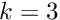

|
NBI
|
NBI is a library and a collection of tools for solving the Laplace and Helmholtz problems using Nystrom Boundary Integral methods, with Fast Multipole Method acceleration.
NBI has a number of tools for generating surfaces and solving the Laplace and Helmholtz problems on those surfaces, subject to user-defined boundary conditions. The examples subdirectory of the distribution contains a number of scripts showing how to run the codes and generate results. Details of command line options for the computation executables can be found using the ‘-h’ for help option.
The main steps in solving a problem are:
nbi-surface nbi-assemble-laplace or nbi-assemble-helmholtz nbi-solve-laplace or nbi-solve-helmholtz nbi-field-laplace or nbi-field-helmholtz Results can be visualised using nbi-process to generate mesh files which can be viewed using gmsh, available from https://www.gmsh.info/
A number of examples showing the use of NBI are available in the .../examples directory. A basic calculation for the Helmholtz problem would be:
nbi-surface -g ellipsoid-ico -i 2 -o sphere.nbi nbi-assemble -k 3.0 -d 5 -g sphere.nbi -m matrix.dat nbi-solve-helmholtz -b point.bc -f -s solution.dat -k 3.0 nbi-field-helmholtz -g sphere.nbi -s solution.dat -k 3.0 -F field.nbi> field.dat nbi-process -F field.nbi -d field.dat -o field.msh
This generates a spherical surface as a twice refined icosahedron; assembles the problem matrices for a wavenumber ; solves for a Neumann boundary condition given in the file point.bc; computes the resulting potential on a surface given in field.nbi and generates a .msh file for the field, which can be viewed using GMSH. Boundary conditions are defined using analytical expressions .
More details are available on how to use the NBI tools to set up and solve problems, and to process the results
The following papers and reports have been used in developing NBI. The main theory and method for the work in the main library is that of Greengard et al, and of Bremer and Gimbutas. Other papers are used in developing the FMM library wbfmm and are listed here for completeness.